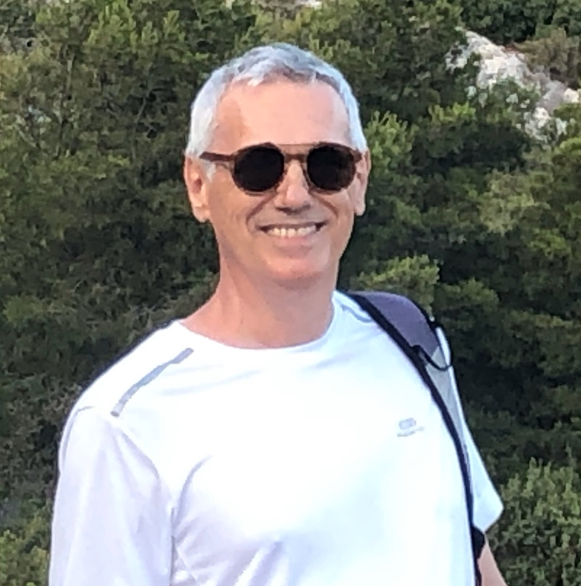

Editoral Board Member
Analysis & PDE (Editor since 2026),
Rendiconti Lincei
Matematica e Applicazioni (Advisory Committee, since 2021)
Ergodic
Theory and Dynamical Systems (Editorial board, 2000--2025)
Quondam
Rendiconti
di Matematica e delle sue applicazioni
(Governing Editorial Board, 2016-2025)
Bollettino
Unione Matematica Italiana (Editor, 2013-2025).
Communications in Mathematical Phyics
(Editor, 2015--2025)
Nonlinearity (Editor
2002-2014, Co-editor in chief 2015--2019)
Journal
of Dynamical and Control Systems (Editor, 2014--2019)
Journal
of Statistical Physics (Associate Editor, 2013--2018)
Discrete
and Continuous Dynamical Systems (Editor, 2003--2015)
Mathematical
Physics Electronic Journal (Editor, 2002--2010)
Membership in Scientific Societies
Socio Corrispondente of the Accademia Nazionale
dei Lincei (Elected 2021).
Ordinary Member of the Academia Europaea
(Elected in 2020)
Fellow of the
Institute of Physics (Elected in 2004)
European Mathematica Society (Member since 2017)
International Association of Mathematical Phyisics
(Member since 2007)
Unione Matematica Italiana
(Member since 2007). Member of the UMI group
DinAmici (founded in 2020).
American Mathematical Society (Member since 1984)
Gruppo Nazionale per la Fisica Matematica (Member since 1981)
Administrative
and Scientific activities
Deputy-Director of the
Ph.D. School in Mathematics
University of Tor Vergata (2024-2026)
Principal Investigator of the PRIN Grant
Stochastic properties of dynamical systems" (PRIN 2022NTKXCX), 2023-2025
Member of the Scientific Council of the Center for Mathematics and
Theoretical Physics
Member of the advisory board of the
Centre for Nonlinear Mathematics and Applications at Loughborough
Past activity
Member of the Brin Prize selection committee (2019-2026).
Director of the
Ph.D. School in Mathematics
University of Tor Vergata (2021-2024)
Director of the Department's INDAM
Research Unit (2005--2023)
Principal Investigator of the PRIN Grant "
Stochastic properties of dynamical systems", (PRIN 2022NTKXCX), 2023-2025.
Principal Investigator of the PRIN Grant
"
Regular and stochastic behaviour in dynamical systems" (PRIN 2017S35EHN), 2019-2021.
Principal Investigator of the
European Advanced Grant (call 2009)
Macroscopic Laws and Dynamical
Systems (MALADY) (ERC AdG 246953)
Member of the Scientific Committee of the GNFM (2009-2012)
Local Coordinator of the PRIN research project "Teorie geometriche
e analitiche dei sistemi Hamiltoniani in dimensioni
finite e infinite" (PRIN 2010JJ4KPA_009) 2013-2016
Principal Investigator of the PRIN Grant "Dynamical Systems and applications" (PRIN 2007B3RBEY), 2008-
2009
Member of the Scientific Committee of the GDRE GREFI-MEFI
(2009-2013)
Italian coordinator of the GDRE GREFI-MEFI
(2005-2009)
Teaching and
Related activities
Current Teaching
Teaching in the near past
Sistemi Dinamici, anno 2025-2026,
Primo semestre (Corso di Laurea Magistrale in Matematica)
Dynamical Systems and Ergodic Theory, year 2025-2026 (PhD course University of Tor Vergata)
Matematica 1, anno 2025-2026,
Primo semestre (Corso di Laurea Triennale Scienza dei Materiali, Chimica Applicata)
Fisica Matematica 1, anno 2024-2025,
secondo semestre (Corso di Laurea in Matematica)
Analisi 2 per Scienze dei materiali,
Chimica Applicata, Metodi e Modelli per Data Science, anno 2024-2025,
secondo semestre
Hyperbolic Billiards, Fall semester 2024, Ph.D. course, Department of
Mathematics University of Maryland
Fisica Matematica 1, anno 2023-2024,
secondo semestre (Corso di Laurea in Matematica)
Analisi 2 per Scienze dei materiali,
Chimica Applicata, Metodi e Modelli per Data Science
Minicourse on hyperbolic Billiard, Simons Center, Stony Brook.
This are my personal notes,
read at your risk
Fisica Matematica 1, anno 2022-2023,
secondo semestre (Corso di Laurea in Matematica)
Metodi matematici per la chimica,
anno 2022-2023, Secondo semestre (Corso di Laurea Magistrale in Chimica).
Sistemi Dinamici, anno 2021-2022,
Secondo semestre (Corso di Laurea Magistrale in Matematica)
Metodi matematici per la chimica,
anno 2021-2022, Secondo semestre (Corso di Laurea Magistrale in Chimica).
WINTER SCHOOL (Autrans, January 2022): BILLIARDS
Some related material.
Fisica Matematica 1, anno 2020-2021,
secondo semestre (Corso di Laurea in Matematica)
Metodi matematici per la chimica,
anno 2020-2021, Secondo semestre (Corso di Laurea Magistrale in Chimica).
Sistemi Dinamici, anno 2019-2020,
Secondo semestre (Corso di Laurea Magistrale in Matematica)
Metodi matematici per la chimica,
anno 2019-2020, Secondo semestre (Corso di Laurea Magistrale in Chimica).
A smooth introduction to Ergodic Theory,
December 2019, (Corso di Dottorato, Università di Padova)
Last events organized
All the above pertains to various excited states, click here to
see something closer to the ground state.
New directions in thermodynamic formalism,
CIRM, Marseille, 22-26 June, 2026, Scientific Committee.
Interacting particle systems and related fields,
CIRM, Marseille, 22-26 September, 2025, Scientific Committee.
Macroscopic Behavior of Deterministic Systems,
Brin Mathematics Research Center, Maryland, USA,
9-12 September, 2024. Coorganized with Stefano Olla.
Probabilistic techniques for random and time-varying dynamical systems,
CIRM, Marseille, 3-7 October 2022, Scientific Committee.
The International Congress of
Mathematicians 2022 (virtual).
Core member of the
Dynamics panel.
International Conference of Mathemtical Physics, Dynamcial Systems Section, Geneva, Switzerland, 2-7 August 2021.
Coorganized with David Damanik.
Dynamics, Transfer Operators, and Spectra,
CIB, Lausanne, Switzerland, 01 January 2021 to 30 June 2021.
Coorganized with Wael Bahsoun, Viviane Baladi and Mark Demers.
Regular and stochastic behaviour in dynamical systems,
12-14 February 2020, University of Rome Tor Vergata. Coorganized with Oliver Butterley and Alfonso Sorrentino.
Dynamical Systems: from geometry to mechanics ,
Rome, February 5-8, 2019, coorganized with
Filippo Bracci,
Alessandra Celletti and Alfonso Sorrentino
ANALYTICAL METHODS IN CLASSICAL
AND QUANTUM DYNAMICAL SYSTEMS Centro De Giorgi, Pisa, 27 June-2 July 2016.
Coorganized with: Giovanni Forni (U. of Maryland).
Mixing Flows and Averaging Methods,
ESI, Wien, April 04 2016 to May 25, 2016. Coorganized with: P. Balint (TU Budapest), H. Bruin (U Vienna), I. Melbourne (U Warwick), D. Terhesiu (U Vienna)
Moyennisation et homognènèisation dans les systèmes
dèterministes et stochastiques . Marseille, CIRM, 11/15 May 2015. Coorganized with: Ian Melbourne (University of Warwick)
Grigorios Pavliotis (Imperial College London)
Stefano Olla (Univ. Paris-Dauphine).
Chaos at Tor
Vergata. Tor Vergata, Roma, 2-3 April 2014.
Coorganized with S. Luzzatto.
Geometric, Analytic and Probabilistic approaches to dynamics in negative curvature.
Indam Workshop, Roma, 13-17 May 2013.
Member of the Scientific Committee.
A Dynamics Day in Tor Vergata.
Roma, Dipartimento di Matematica,
Universtià di Roma Tor Vergata (Italy) 11 February 2011.
Sistemi dinamici nonlineari e applicazioni.
Pisa, Centro Ennio de
Giorgi (Italy) 18-19 February 2011.
Coorganized with: Antonio Giorgilli, Stefano Marmi, Giancarlo Benettin.
Workshop on the Fourier Law and Related
Topics April 4-8, 2011. Fields Institute, Toronto,
Canada.
Coorganized with: Stefano Olla and Lai-Sang Young
{kind=link}